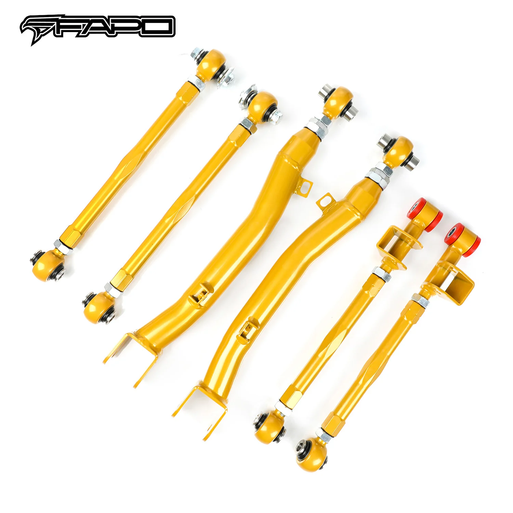

1 / 8Rear Camber Lateral wahacz Do 02-07 93-01 IMPREZA WRX STi GD/GG 6PCS FZ009010
Zastosowanie: 2002-2007 Subaru Impreza WRX/STi GDA/GDBC/GGA (GD/GG) 1993-2001 Subaru Impreza WRX/STi GC8/GDA/GDB (pasuje TYLKO do modeli z silnikami z turbodoładowaniem 2.0L/2.5L EJ20/EJ25 H4) Cechy produktu: 100% fabrycznie nowy w pudełku Ulepszona geometria zawieszenia w celu zmniejszenia nierówności skrętu Zapewnia dodatkowe wbudowane pozytywne kółko, które poprawia zdolność obsługi Przyspieszenie poprawiające wł…
Application: 2002–2007 Subaru Impreza WRX/STi GDA/GDBC/GGA (GD/GG) 1993–2001 Subaru Impreza WRX/STi GC8/GDA/GDB (Fits models with 2.0L/2.5L EJ20/EJ25 H4 Turbocharged Engines ONLY) Features: 100% brand new in box Improved suspension geometry to reduce bump steer Provides additional built-in positive caster which improves your handling ability Acceleration, which improves handling ability Subaru Impreza WRX STi Ver.7/Ver.8/Ver.9 (Bug-eye/Blob-eye/Hawk-eye) The accessories in the photos are included 1-year warranty for any manufacturing defect Warranty: All the items carry standard 1-year warranty from the date of purchase. Proof of purchase is required and it's better to send us your order number. To speed up warranty claims, please provide images and documents with as much detail as possible. Pictures and videos are usually sufficient, and we do not need the defective items back. Sometimes we may ask for additional data to confirm the issue and improve our support.
1699,99 PLN
Opis produktu
Zastosowanie:
- 2002-2007 Subaru Impreza WRX/STi GDA/GDBC/GGA (GD/GG)
- 1993-2001 Subaru Impreza WRX/STi GC8/GDA/GDB (pasuje TYLKO do modeli z silnikami z turbodoładowaniem 2.0L/2.5L EJ20/EJ25 H4)
Cechy produktu:
- 100% fabrycznie nowy w pudełku
- Ulepszona geometria zawieszenia w celu zmniejszenia nierówności skrętu
- Zapewnia dodatkowe wbudowane pozytywne kółko, które poprawia zdolność obsługi
- Przyspieszenie poprawiające właściwości jezdne
- Subaru Impreza WRX STi Ver.7/Ver.8/Ver.9 (Bug-eye/Blob-eye/Hawk-eye)
- Akcesoria widoczne na zdjęciach są wliczone w cenę
- 1 rok gwarancji na wszelkie wady produkcyjne
Gwarancja:
Wszystkie produkty objęte są standardową roczną gwarancją liczoną od daty zakupu. Wymagany jest dowód zakupu i najlepiej przesłać nam numer zamówienia. Aby przyspieszyć realizację roszczeń gwarancyjnych, prosimy o dostarczenie zdjęć i dokumentów zawierających jak najwięcej szczegółów. Zdjęcia i filmy są zwykle wystarczające i nie potrzebujemy zwrotu wadliwych produktów. Czasami możemy poprosić o dodatkowe dane, aby potwierdzić problem i ulepszyć nasze wsparcie.
Application:
- 2002–2007 Subaru Impreza WRX/STi GDA/GDBC/GGA (GD/GG)
- 1993–2001 Subaru Impreza WRX/STi GC8/GDA/GDB (Fits models with 2.0L/2.5L EJ20/EJ25 H4 Turbocharged Engines ONLY)
Features:
- 100% brand new in box
- Improved suspension geometry to reduce bump steer
- Provides additional built-in positive caster which improves your handling ability
- Acceleration, which improves handling ability
- Subaru Impreza WRX STi Ver.7/Ver.8/Ver.9 (Bug-eye/Blob-eye/Hawk-eye)
- The accessories in the photos are included
- 1-year warranty for any manufacturing defect
Warranty:
All the items carry standard 1-year warranty from the date of purchase. Proof of purchase is required and it's better to send us your order number. To speed up warranty claims, please provide images and documents with as much detail as possible. Pictures and videos are usually sufficient, and we do not need the defective items back. Sometimes we may ask for additional data to confirm the issue and improve our support.
FAPO Polska
Ten produkt obsługujemy lokalnie
Autoryzowana obsługa
FAPO Polska prowadzi katalog, kontakt i zamówienia bez odsyłania klienta do zewnętrznych sklepów.
Dobór po aucie
Sprawdzamy dopasowanie produktu do pojazdu, rocznika i wersji przed finalizacją zamówienia.
Wsparcie po zakupie
Masz kontakt w Polsce w sprawach zamówień, wysyłki, gwarancji i zwrotów.